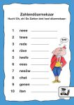
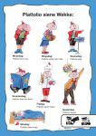
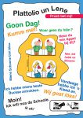
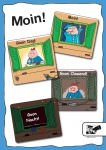
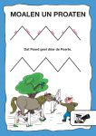
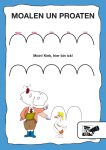
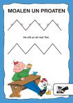

Zahlendöarmekaar
Hier bint de Zahlen van eene bis tiene döarmekaar kumm’n. Kauns du se richtig upschriewen?
Plattolio siene Wekke
Iedern Dag heff Plattolio wat anners te doon. Wat dös du alls in de Wekke? Tell is up!
Proat met mij!
Du kauns Plattolio un Lene utsnien un up de Finger stoppen. De Bloasen üm dij too wiest dij, wat de bäiden alle seggen könnt. Fault dij meär in?
Hallo un Tschüss!
„Moin“ kauns du den heelen Dag over seggen – ok wenn dat al oarig laate is. Un wenn du gees, dann seggs du „Tschüss“.
Dat Peard geet döar de Poarte!
Kiek is! Doar will een Peard döar de Poarte! Moal de Streepen noa un segg dat Riemsel harre up.
Moin! Kiek, hier bin ick!
Hier kauns du moalen un proaten. Moal de ünneren Bögen met de heelen verschillenen Bountstifte noa uns segg harre up: „Moin, kiek, hier bin ick!“
He sitt un ett met Tiet.
Kiek dij dat is an! Plattolio heff Tiet en ett. Moal dat Zickzack noa uns segg de Riemsels harre up.